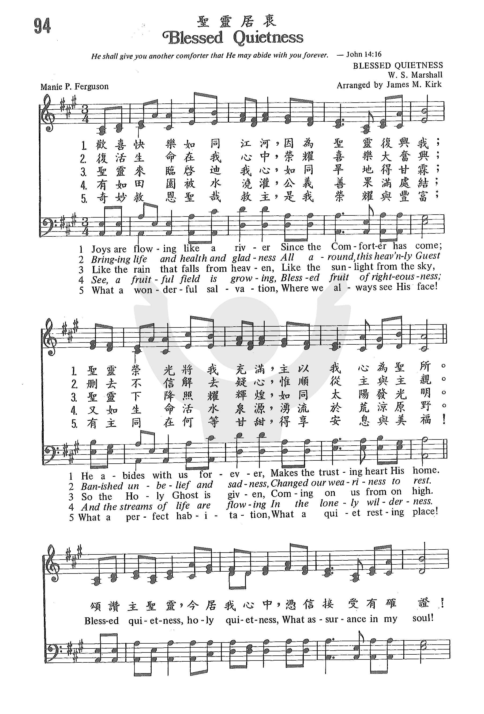
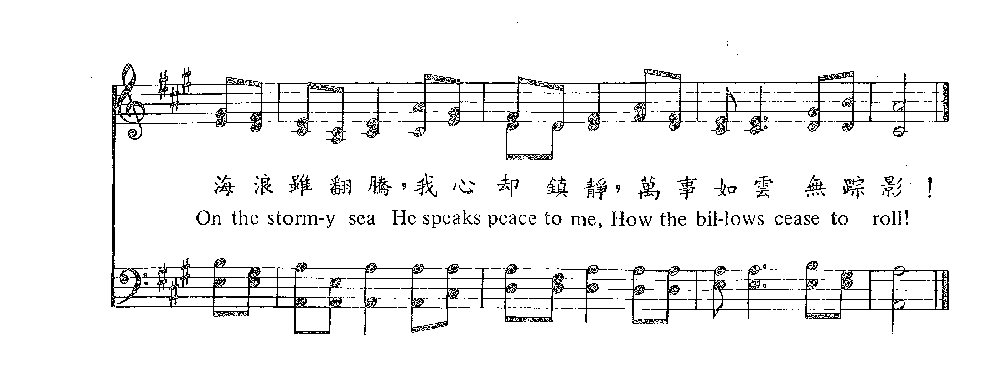

|
|
|
|
1 Joys are flowing like a river Refrain: 2 Like the rain that falls from heaven, 3 See, a fruitful field is growing, 4 What a wonderful salvation, |
“094 聖靈居衷 BLESSED QUIETNESS.mp3” by DOW YOUNG. |
|
https://www.zanmeishige.com/tab/25416.html?songbook=1&index=94


|
|
|
|
|
-

https://youtu.be/1BoDNPLVGPA -
https://youtu.be/XcXA0khmVCU
| Text: | Blessed Quietness |
| Author: | Manie P. Ferguson, 19th Century |
| Tune: | [Joys are flowing like a river] |
| Arranger: | James M. Kirk, 19th Century |
| Composer: | W. S. Marshall, 19th Century |
| Short Name: | M. P. Ferguson |
| Full Name: | Ferguson, M. P. (Manie Payne), 1850-1932 |
| Birth Year: | 1850 |
| Death Year: | 1932 |
Manie Payne Ferguson United Kingdom 1850-1932. Born in Carlow, Ireland, in 1883 she married Theodore Pollock Ferguson, a past Presbyterian minister from Ohio, who had become an itinerant evangelical preacher. They moved to Los Angeles, CA, in 1885. He became a pioneer leader in the American Holiness Movement, a Christian evangelist, and social worker, founding, along with her husband, the non-denominational Peniel Mission in 1886. In 1894 they received a significant financial donation from George Studd allowing them to expand the mission. They constructed a 900-seat auditorium and ministry centre there in Los Angeles. They partnered with Studd and Phineas Bresee, each acting as a superintendent of the mission organization. In 1894 Dr. Joseph Widney, President of USC, led the dedication Praise service, and Bresee preached the later service. Widney and Bresee separated from the mission in 1895 to form the Church of the Nazarene, and Manie Fergusion provided primary leadership of the Peniel Mission. The mission provided ministry especially for single women, who lived in rented rooms near the auditorium, where evangelical services were held. The Fergusions managed to live on income from three small houses they owned, and mission rents and donations covered mission expenses. Street-corner meetings were held in the afternoon, evangelical services at night, and a meal was served afterward. Converts were asked to join a local church of their choice. Manie continued the mission work after her husband's death until her own death. In 1947 the mission became part of the World Gospel Mission enterprise. Manie wrote many poems and also authored hymn lyrics. She died in Los Angeles.
John Perry
| Title: | BLESSED QUIETNESS (Marshall) |
| Composer: | W. S. Marshall (1897) |
| Meter: | 8.7.8.7 with refrain |
| Incipit: | 34513 21617 65 |
| Key: | A♭ Major |
| Copyright: | Public Domain |
| Short Name: | W. S. Marshall |
| Full Name: | Marshall, W. S., composer |
He composed tunes for gospel lyric writers.
John Perry
聖靈居衷 Blessed Quietness
歡喜快樂如同江河，因為聖靈復興我；
聖靈榮光將我充滿，主以我心為聖所。
復活生命在我心中，榮耀喜樂大奮興；
刪去不信除去疑心，惟順從主與主親。
聖靈來臨啟迪我心，如同旱地得甘霖；
聖靈下降照耀輝煌，如同太陽發光明。
有如田園被水澆灌，公義善果滿處結；
又如生命活水泉源，湧流於荒涼原野。
奇妙救恩聖哉救主，是我榮耀與豐富；
有主同在何等甘甜，得享安息與美福！
（副歌）
頌讚主聖靈，今居我心中，
憑信接受有確證！
海浪雖翻騰，我心卻鎮靜，
萬事如雲無蹤影！
這首詩的作者傅梅妮（Manie Payne Ferguson,1850 - ？）出生在愛爾蘭。 她雖是基督徒，但心中沒有平安，經常為自己的罪，在痛苦中掙扎。
她與衛斯理教派的傳教士傅格遜（T. P. Ferguson）結婚後，隨他追求屬靈的更新和完全的聖潔；經歷聖靈充滿後，她的生命就有大改變。
1900年，她寫這首詩闡明：有聖靈居心中，喜樂如江河洶湧，聖靈賜我們無聲的祝福。
1886年，傅梅妮與傅格遜在美國西岸洛杉磯創立便以利會（Peniel Missions），繼在阿拉斯加，夏威夷，埃及及中國設立分會。 著名的聖詩作家李理納（Haldor
Lillenas,見四月十八日）是在他們的俄勒岡州佈道會上決志的。
約翰福音14:25–27「我還與你們同住的時候，已將這些話對你們說了。但保惠師，就是父因我的名所要差來的聖靈，他要將一切的事，指教你們，並且要叫你們想起我對你們所說的一切話。我留下平安給你們，我將我的平安賜給你們．我所賜的，不像世人所賜的．你們心裡不要憂愁，也不要膽怯。」
這首詩由馬歇兒（W. S. Marshall，19世紀）作曲 ，後經寇克（James M. Kirk, 1854-1945）改編。
寇克出生在美國俄亥俄州，父母是衛理公會教友，他自幼信主。
1887年，他加入基督教協同會，1907年，他在協同會的贊助下，在家鄉成立福音教會。他是俄州男聲四重唱的團員，經常在協同會大會中獻唱，作有多首福音詩歌的詞和曲。
中英文聖詩集參考
英文歌名 Blessed
Quietness
教會聖詩 94
聖徒詩集 246
聖詩 557
青年聖歌III 39
校園詩歌II 38
Words: Manie Payne Ferguson (b. _____, 1850; d. June 8,
1932)
Music: William S. Marshall (late 19th century)
Links:
Wordwise Hymns (none)
The Cyber
Hymnal
Note: “Mother Ferguson,” as she was called, was born in Ireland. With her husband Theodore she founded the Peniel Rescue Missions, eventually developing several of these along the west coast of the United States. The Fergusons were holiness in doctrine, teaching salvation, holy living, and Christian perfectionism. They used many of the techniques introduced by the Salvation Army in their ministry to reach people. Hymn writer Haldor Lillenas (Wonderful Grace of Jesus), was converted at a Peniel Mission in Astoria, Oregon, in 1906.
CH-1) Joys are flowing like a river,
Since the Comforter has come;
He abides with us forever,
Makes the trusting heart His home.
Blessèd quietness, holy quietness,
What assurance in my soul!
On the stormy sea, He speaks peace to me,
How the billows cease to roll!
The doctrine of perfectionism or entire sanctification is associated with what is called the second blessing. It is believed that there is a second crisis experience to be sought after salvation, in which the Christian, infused with power by the Spirit of God, is able to live a life of sinlessness and total love. Some teach the total eradication of the sin nature in the individual. Others don’t go quite that far, but the practical result in terms of behaviour is supposed to be much the same.
While there are some parts of this hymn which I appreciate, I am not holiness in doctrine, parting company with the Ferguson’s there. This is a subject deserving of a long article all on its own. However, I will make a few comments on this erroneous teaching.
The Bible states quite clearly that is wrong to say that we have no sin nature (I Jn. 1:8), or that we do not sin (I Jn. 1:10). While Christians live out this mortal life, there will be an ongoing conflict between the indwelling Holy Spirit and “the flesh” (our inborn sin nature) (Gal. 5:17).
Experience confirms this truth. Apparently, even John Wesley, who espoused perfectionist teaching, had to admit on his deathbed that he hadn’t achieved it. But years ago, I knew a man who stated that he hadn’t committed a single sin in seventeen years. “That’s right,” his wife said. He has never sinned in all that time.
Setting aside the arrogance the man’s claim, it revealed a very narrow understanding of what is sin and what is not. I knew him. He could be angry and vengeful, and I was shocked one day to hear him use vulgar language. Further, focusing on those sins that we don’t commit often misses all the things we should be doing. Besides the sins of commission are the many sins of omission. Who could say he perfectly demonstrates the love of Christ in all situations? Who could say he invariably seizes every opportunity to serve the Lord?
As to the false notion of the eradication of the sin nature. It seems totally at odds with what happens to the other two foes we face. Hindering a holy Christian walk are the world, the flesh, and the devil. And in this life, the Lord does not eradicate the world, or the devil. Neither does He instantly remove the sin nature within.
When an individual becomes a Christian, he or she is fully sanctified positionally–that is, in the legal record of the books of heaven. This is accomplished when God, in grace, credits the righteousness of Christ to our heavenly account (II Cor. 5:21). We are “complete in Him” (Col. 2:10). On that basis we’re delivered forever from the penalty of our sin.
As to our conduct, we are called to walk in newness of life. This is a matter of practical sanctification, holy living. Positional sanctification remains eternally constant, since it is based on Christ’s righteousness, not our own. But practical (or progressive) sanctification may well be a different story. We’re to live in victory over the power of sin, but sometimes we fail. It depends on our obedience to God’s Word (Jn. 17:17; Eph. 5:26), our yieldedness to the Spirit of God and reliance on His power (Gal. 5:16, 25; cf. I Jn. 1:9).
Our perfect (or permanent) sanctification, full deliverance from the very presence of sin, will only take place when we go to be with Christ. Then, Christlikeness will be perfected in us (Phil. 3:20-21; I Jn. 3:1-2; Rev. 22:11). That is when the full richness of Mannie Ferguson’s descriptive words will be accomplished.
CH-2) Bringing life and health and gladness,
All around this heav’nly Guest,
Banished unbelief and sadness,
Changed our weariness to rest.
Questions:
1) How much of this hymn could you sing with sincerity and confidence?
2) What potential dangers to you see in the teaching that we can reach perfection in this life? (Or that we have reached perfection, and never sin?)
Links:
Wordwise Hymns (none)
The Cyber
Hymnal
Blessed quietness
Holy quietness
What assurance in my soul
On the stormy sea
Jesus speaks to me
And the billows cease to roll
Growing up, I often heard the lyrics of the popular hymn “Blessed Quietness” at
church. It was easy to sing and remember, but I admit that it didn’t hold much
meaning to me as a child. As an adult, I appreciate this song much more, as I’ve
come to value and understand the power of silence, of quietness, of stillness.
We live in the age of saturated noise. Notification bells. Phones ringing.
Televisions and radios blasting. Constant “dings” from social media and news
outlets delivering doom every hour on the hour. There’s gossip, daily demands,
and stressful conversations. Kids screaming, neighbors arguing and small talk in
the break room. Everywhere you go there’s noise.
There must be a way of escape from the chaos, and a reason to do so. Aside from
a little sanity, there are huge benefits to quieting the noise:
Self-reflection
When was the last time you evaluated yourself? Like really self-reflected?
Although introspection could pose as intimidating — especially the possibility
of discovering something you may not like — self-awareness is the beautiful
result. Probing questions could be: why do I think the way I think? Why do I do
what I do? Why do I think or believe this way about a particular idea? Who am I?
Who do I want to become?
Getting rid of the noise to look within doesn’t have to be a deeply
philosophical exercise. But the more time you evaluate your thinking, words, and
actions, the more you get to know yourself. And the more you know yourself, the
better you can self-correct, gain confidence, know what you want and need, and
understand those things that you should eliminate from yourself or outside
sources to help you grow into a better human being.
Sadly, there are many who don’t take the time to quiet the outside noise and
spend time with themselves—really get to know themselves. Imagine a world where
you get to define who you are, not everyone else. It’s actually possible, but it
requires deeper and more frequent looks in the mirror.
Deep thinking without distraction
It’s hard to clear the mind and think clearly when it’s clouded with worry,
to-do lists, distractions, and outside opinions. What could you achieve with
deep thinking? Well, a lot. There are some things in life that require more than
a quick thought. It could be coming up with business ideas, evaluating a life
decision, solving a complex problem, or formulating a strategy. A few minutes
(or hours) of quiet time can be all you need to put some focus and intention
behind your thoughts. The possibilities that can come from a thought are
endless.
Prayer/Meditation
Whatever your beliefs may be, it’s energizing to connect to a source. For me,
God is the source that I connect to gain strength, purpose, energy, and
assurance outside of myself. Prayer keeps me grounded and affirmed. For whatever
source you may choose, prayer and/or meditation allows the mind to be still,
reset and reenergize. I believe it’s truly a privilege to be able to find peace
through these methods.
Creativity
Creativity is a funny thing because it comes in all forms and can be cultivated
in any situation. It can come through music, inspired by a conversation or
conjured up on a random walk through the neighborhood. Creative thoughts can
also make its entrance into your mind in quiet times and even in your sleep. It
doesn’t even require intentional thinking. Sometimes the most creative thoughts
surface when you just simply sit and allow yourself to “be”.
When was the last time you made a real effort to get quiet — whether it be
taking a walk in nature, dedicating time to read a book, or spending time alone
to sit and write your thoughts?
Quietness is a gift and peace is a choice. The absence of external and internal
noise isn’t always easily attainable, but it is a privilege that should be
sought after and appreciated.